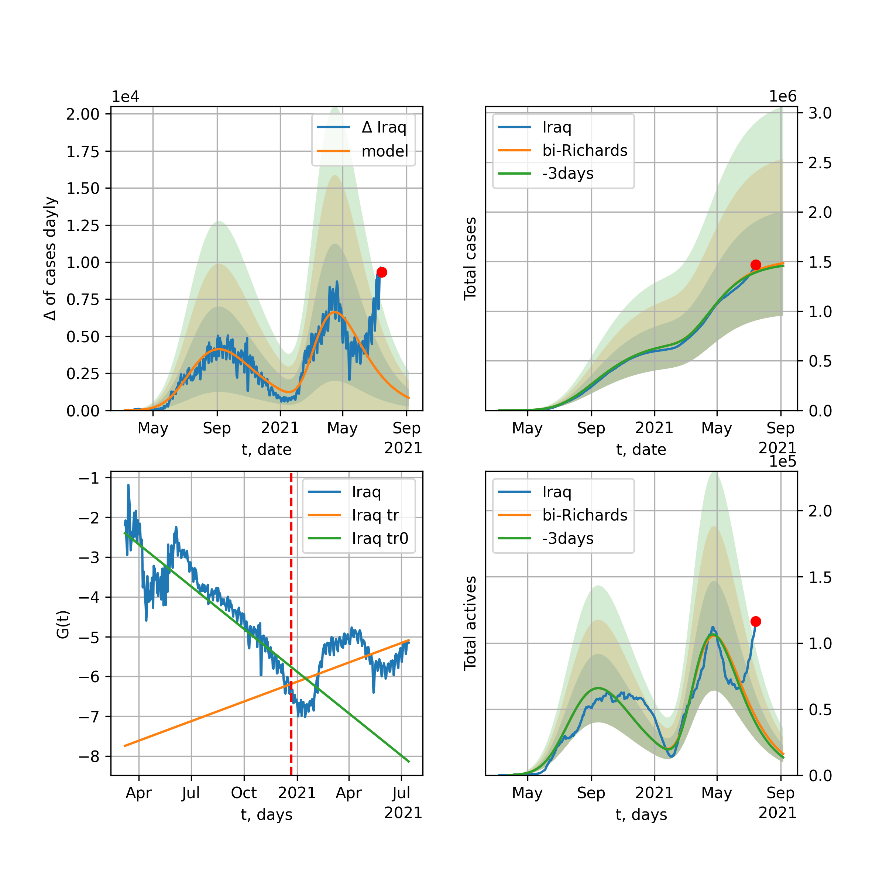

Multi-logistic model of COVID-19 dynamics
Model, code, results
Project maintained by algmaknick Hosted on GitHub Pages — Theme by mattgraham
World

World data at: 2020-06-27
+3 day model MAPE: 0.010283
model: bi-Richards
coeffs: [ 1.53343106e+07 1.48906779e+00 -4.97631451e+01 1.76819611e-02]
S.Korea scenario coeffs: [0.36242246, 2.56241634, 1.84890887, 0.13324732]
rational stdev: 0.080397
forecast at the end of period: +719 days
deltaDaycases: 5291
total cases: 25371778 ± 2039813
total death: 1261154 ± 304178
bi-Richards approximation splitting point: 50
trend coefficient of determination: 0.842607
intercept: -2.325713
slope: -0.033579
trend coefficient of determination: 0.339987
intercept: -3.853346
slope: -0.005153
European Union

European Union data at: 2020-06-26
+3 day model MAPE: 0.004652
model: bi-Richards
coeffs: [ 2.75678221e+05 3.33574142e+00 -4.28279808e+01 1.05283361e-02]
rational stdev: 0.576598
forecast at the end of period: +22 days
deltaDaycases: 1611
total cases: 1308375 ± 754406
total death: 136706 ± 236473
bi-Richards approximation splitting point: 83
trend coefficient of determination: 0.943661
intercept: -1.125474
slope: -0.057497
trend coefficient of determination: 0.001478
intercept: -5.979711
slope: 0.001039
Brazil

Brazil data at: 2020-06-27
+3 day model MAPE: 0.025201
model: Richards
coeffs: [3.55368769e+06 1.29911781e-01 4.51510570e+01 2.17107627e-01]
S.Korea scenario coeffs: [0.36242246, 2.56241634, 1.84890887, 0.13324732]
rational stdev: 0.187121
forecast at the end of period: +469 days
deltaDaycases: 2975
total cases: 4473691 ± 837123
total death: 194128 ± 108976
trend coefficient of determination: 0.874962
intercept: -3.537008
slope: -0.033283
Russia

Russia data at: 2020-06-27
+3 day model MAPE: 0.008121
model: Richards
coeffs: [ 7.91879475e+05 2.93245326e+00 -7.20919427e+01 1.21186200e-02]
S.Korea scenario coeffs: [0.36242246, 2.56241634, 1.84890887, 0.13324732]
rational stdev: 0.108759
forecast at the end of period: +539 days
deltaDaycases: 194
total cases: 1062476 ± 115553
total death: 15182 ± 4953
trend coefficient of determination: 0.973493
intercept: -1.520350
slope: -0.033089
USA

USA data at: 2020-06-27
+3 day model MAPE: 0.020435
model: bi-Richards
coeffs: [3.33614764e+06 1.34513248e+00 3.59782151e+00 2.34071584e-02]
rational stdev: 0.286890
forecast at the end of period: +133 days
deltaDaycases: 2866
total cases: 5360823 ± 1537964
total death: 264559 ± 227697
bi-Richards approximation splitting point: 90
trend coefficient of determination: 0.944898
intercept: -1.448098
slope: -0.043374
trend coefficient of determination: 0.689982
intercept: -7.490371
slope: 0.027356
Spain

Spain data at: 2020-06-27
+3 day model MAPE: 0.000565
model: bi-Richards
coeffs: [3.53603378e+03 1.64674576e+02 5.71838300e+01 3.62487312e-03]
rational stdev: 0.207617
forecast at the end of period: +35 days
deltaDaycases: 10
total cases: 294294 ± 61100
total death: 28220 ± 17576
bi-Richards approximation splitting point: 91
trend coefficient of determination: 0.954112
intercept: -0.686259
slope: -0.060612
trend coefficient of determination: 0.019855
intercept: -6.090406
slope: -0.006555
Italy

Italy data at: 2020-06-27
+3 day model MAPE: 0.001125
model: Richards
coeffs: [ 2.38487834e+05 7.19185055e+00 -5.64913595e+01 8.09748350e-03]
rational stdev: 0.087194
forecast at the end of period: +21 days
deltaDaycases: 21
total cases: 238133 ± 20763
total death: 34426 ± 9005
trend coefficient of determination: 0.971979
intercept: -1.247508
slope: -0.052353
United Kingdom

United Kingdom data at: 2020-06-27
+3 day model MAPE: 0.001835
model: Richards
coeffs: [ 3.21027127e+05 3.81820060e+00 -6.37223103e+01 1.19072060e-02]
S.Korea scenario coeffs: [0.36242246, 2.56241634, 1.84890887, 0.13324732]
rational stdev: 0.150211
forecast at the end of period: +329 days
deltaDaycases: 201
total cases: 423623 ± 63633
total death: 59415 ± 26774
trend coefficient of determination: 0.974750
intercept: -1.450178
slope: -0.043625
France

France data at: 2020-06-26
+3 day model MAPE: 0.001294
model: bi-Richards
coeffs: [ 2.99939995e+04 3.45606010e+00 -2.11717889e+00 1.41751307e-02]
rational stdev: 0.096663
forecast at the end of period: +22 days
deltaDaycases: 134
total cases: 166702 ± 16113
total death: 30466 ± 8834
bi-Richards approximation splitting point: 86
trend coefficient of determination: 0.905055
intercept: -0.864300
slope: -0.069061
trend coefficient of determination: 0.077534
intercept: -2.083077
slope: -0.041208
Germany

Germany data at: 2020-06-27
+3 day model MAPE: 0.005422
model: bi-Richards
coeffs: [ 2.32011342e+04 7.02251848e+00 -2.16092005e+01 6.58794459e-03]
rational stdev: 0.132691
forecast at the end of period: +35 days
deltaDaycases: 90
total cases: 200306 ± 26578
total death: 9286 ± 3696
bi-Richards approximation splitting point: 94
trend coefficient of determination: 0.950732
intercept: -1.425510
slope: -0.061134
trend coefficient of determination: 0.232895
intercept: -10.860660
slope: 0.045320
Turkey

Turkey data at: 2020-06-27
+3 day model MAPE: 0.002589
model: bi-Richards
coeffs: [ 9.07409907e+04 2.92055098e+00 -1.46900365e+01 1.29829583e-02]
rational stdev: 0.199715
forecast at the end of period: +105 days
deltaDaycases: 61
total cases: 250366 ± 50002
total death: 6495 ± 3891
bi-Richards approximation splitting point: 75
trend coefficient of determination: 0.780909
intercept: -0.987268
slope: -0.058345
trend coefficient of determination: 0.239465
intercept: -5.951806
slope: 0.008179
Iran

Iran data at: 2020-06-27
+3 day model MAPE: 0.007898
model: bi-Richards
coeffs: [ 1.71924447e+05 3.93914079e+00 -9.84799789e+00 1.06013219e-02]
S.Korea scenario coeffs: [0.36242246, 2.56241634, 1.84890887, 0.13324732]
rational stdev: 0.265710
forecast at the end of period: +413 days
deltaDaycases: 183
total cases: 321995 ± 85557
total death: 15156 ± 12081
bi-Richards approximation splitting point: 75
trend coefficient of determination: 0.949241
intercept: -0.909536
slope: -0.055058
trend coefficient of determination: 0.286013
intercept: -3.754897
slope: -0.005939
Canada

Canada data at: 2020-06-27
+3 day model MAPE: 0.000440
model: Richards
coeffs: [ 1.09861934e+05 3.57742372e+00 -7.37189991e+01 1.18285384e-02]
S.Korea scenario coeffs: [0.36242246, 2.56241634, 1.84890887, 0.13324732]
rational stdev: 0.156062
forecast at the end of period: +420 days
deltaDaycases: 27
total cases: 147718 ± 23053
total death: 12209 ± 5716
trend coefficient of determination: 0.982093
intercept: -1.566957
slope: -0.044217
South Africa

South Africa data at: 2020-06-27
+3 day model MAPE: 0.015403
model: bi-Richards
coeffs: [6.39009072e+06 1.04443613e-01 9.26285121e+01 1.51682186e-01]
rational stdev: 0.274411
forecast at the end of period: +427 days
deltaDaycases: 623
total cases: 6352337 ± 1743151
total death: 116298 ± 95740
bi-Richards approximation splitting point: 30
trend coefficient of determination: 0.520979
intercept: -1.230285
slope: -0.108356
trend coefficient of determination: 0.224434
intercept: -4.014257
slope: -0.006235
Belgium

Belgium data at: 2020-06-27
+3 day model MAPE: 0.001927
model: Richards
coeffs: [ 6.03789012e+04 6.26161155e+00 -4.66444011e+01 1.03329379e-02]
S.Korea scenario coeffs: [0.36242246, 2.56241634, 1.84890887, 0.13324732]
rational stdev: 0.412372
forecast at the end of period: +245 days
deltaDaycases: 22
total cases: 81248 ± 33504
total death: 12918 ± 15981
trend coefficient of determination: 0.847256
intercept: -1.232785
slope: -0.057283
Peru

Peru data at: 2020-06-27
+3 day model MAPE: 0.003481
model: Richards
coeffs: [3.62125030e+05 1.09313736e-01 5.67933323e+01 4.13864281e-01]
S.Korea scenario coeffs: [0.36242246, 2.56241634, 1.84890887, 0.13324732]
rational stdev: 0.348110
forecast at the end of period: +469 days
deltaDaycases: 26
total cases: 491653 ± 171149
total death: 16273 ± 16994
trend coefficient of determination: 0.912906
intercept: -3.491028
slope: -0.060022
Netherlands

Netherlands data at: 2020-06-27
+3 day model MAPE: 0.000266
model: bi-Richards
coeffs: [4.60193641e+03 4.88509574e+00 4.33347666e+01 1.74819425e-02]
rational stdev: 0.129887
forecast at the end of period: +21 days
deltaDaycases: 13
total cases: 50780 ± 6595
total death: 6191 ± 2412
bi-Richards approximation splitting point: 75
trend coefficient of determination: 0.961985
intercept: -0.861318
slope: -0.062649
trend coefficient of determination: 0.438818
intercept: -4.038058
slope: -0.020345
India

India data at: 2020-06-27
+3 day model MAPE: 0.012382
model: Richards
coeffs: [ 5.33165719e+06 3.28138964e-01 -4.69357522e+01 4.33119652e-02]
S.Korea scenario coeffs: [0.36242246, 2.56241634, 1.84890887, 0.13324732]
rational stdev: 0.366612
forecast at the end of period: +1029 days
deltaDaycases: 2689
total cases: 6564290 ± 2406545
total death: 199594 ± 219520
trend coefficient of determination: 0.704356
intercept: -1.906339
slope: -0.019345
Switzerland

Switzerland data at: 2020-06-27
+3 day model MAPE: 0.002864
model: bi-Richards
coeffs: [ 2.63357361e+03 3.11094835e+00 -9.55828576e+01 7.62907731e-03]
rational stdev: 0.344414
forecast at the end of period: +35 days
deltaDaycases: 18
total cases: 32196 ± 11088
total death: 2001 ± 2067
bi-Richards approximation splitting point: 80
trend coefficient of determination: 0.962477
intercept: -1.059699
slope: -0.085079
trend coefficient of determination: 0.250328
intercept: -10.645980
slope: 0.033681
Ecuador

Ecuador data at: 2020-06-27
+3 day model MAPE: 0.013969
model: Richards
coeffs: [ 6.39802862e+04 2.52255968e+00 -1.12967738e+02 1.17132177e-02]
S.Korea scenario coeffs: [0.36242246, 2.56241634, 1.84890887, 0.13324732]
rational stdev: 0.124825
forecast at the end of period: +609 days
deltaDaycases: 14
total cases: 85670 ± 10693
total death: 6944 ± 2600
trend coefficient of determination: 0.209333
intercept: -2.548308
slope: -0.038265
Portugal

Portugal data at: 2020-06-27
+3 day model MAPE: 0.002357
model: bi-Richards
coeffs: [ 2.92027113e+04 1.61670836e+00 -3.85437953e+01 1.87737550e-02]
rational stdev: 0.052541
forecast at the end of period: +189 days
deltaDaycases: 2
total cases: 57287 ± 3009
total death: 2171 ± 342
bi-Richards approximation splitting point: 61
trend coefficient of determination: 0.904514
intercept: -1.204235
slope: -0.070348
trend coefficient of determination: 0.047101
intercept: -5.282543
slope: 0.003450
Saudi Arabia

Saudi Arabia data at: 2020-06-27
+3 day model MAPE: 0.009147
model: Richards
coeffs: [ 5.79754956e+05 1.05697103e+00 -1.15442287e+02 1.66380216e-02]
S.Korea scenario coeffs: [0.36242246, 2.56241634, 1.84890887, 0.13324732]
rational stdev: 0.311535
forecast at the end of period: +427 days
deltaDaycases: 47
total cases: 580728 ± 180917
total death: 4915 ± 4593
trend coefficient of determination: 0.244943
intercept: -2.136632
slope: -0.016488
Sweden

Sweden data at: 2020-06-26
+3 day model MAPE: 0.041117
model: bi-Richards
coeffs: [4.23657855e+04 4.42274573e+00 2.34811932e+01 1.16448704e-02]
rational stdev: 0.242565
forecast at the end of period: +85 days
deltaDaycases: 36
total cases: 93066 ± 22574
total death: 7543 ± 5489
bi-Richards approximation splitting point: 90
trend coefficient of determination: 0.851746
intercept: -1.326890
slope: -0.037331
trend coefficient of determination: 0.021416
intercept: -3.114368
slope: -0.010992
Pakistan

Pakistan data at: 2020-06-27
+3 day model MAPE: 0.006608
model: bi-Richards
coeffs: [2.16566992e+05 5.05760860e-02 1.07272735e+02 3.78033262e+00]
S.Korea scenario coeffs: [0.36242246, 2.56241634, 1.84890887, 0.13324732]
rational stdev: 0.390290
forecast at the end of period: +154 days
deltaDaycases: 114
total cases: 294961 ± 115120
total death: 5984 ± 7006
bi-Richards approximation splitting point: 25
trend coefficient of determination: 0.926202
intercept: -4.105438
slope: -0.930175
trend coefficient of determination: 0.978931
intercept: -25.327034
slope: -0.217869
Ireland

Ireland data at: 2020-06-27
+3 day model MAPE: 0.000744
model: Richards
coeffs: [2.52749799e+04 2.04752931e-01 2.15987253e+01 4.62539821e-01]
rational stdev: 0.170450
forecast at the end of period: +91 days
deltaDaycases: 0
total cases: 25274 ± 4308
total death: 1722 ± 880
trend coefficient of determination: 0.968062
intercept: -3.715694
slope: -0.089309
Mexico

Mexico data at: 2020-06-27
+3 day model MAPE: 0.007296
model: Richards
coeffs: [ 9.18506649e+05 5.37425013e-01 -8.04514501e+01 3.24152449e-02]
S.Korea scenario coeffs: [0.36242246, 2.56241634, 1.84890887, 0.13324732]
rational stdev: 0.200260
forecast at the end of period: +889 days
deltaDaycases: 417
total cases: 1170709 ± 234446
total death: 145132 ± 87192
trend coefficient of determination: 0.907005
intercept: -2.054776
slope: -0.021718
Singapore

Singapore data at: 2020-06-26
+3 day model MAPE: 0.004068
model: bi-Richards
coeffs: [ 3.79580756e+04 5.63363133e+00 -2.81167738e+01 7.09068360e-03]
S.Korea scenario coeffs: [0.36242246, 2.56241634, 1.84890887, 0.13324732]
rational stdev: 0.259169
forecast at the end of period: +470 days
deltaDaycases: 19
total cases: 59520 ± 15425
total death: 36 ± 27
bi-Richards approximation splitting point: 60
trend coefficient of determination: 0.124784
intercept: -2.317118
slope: -0.021564
trend coefficient of determination: 0.638242
intercept: 0.395910
slope: -0.038588
Chile

Chile data at: 2020-06-27
+3 day model MAPE: 0.000353
model: Richards
coeffs: [3.13887164e+05 6.25180526e-02 5.45232342e+01 1.52291768e+00]
S.Korea scenario coeffs: [0.36242246, 2.56241634, 1.84890887, 0.13324732]
rational stdev: 0.095278
forecast at the end of period: +161 days
deltaDaycases: 261
total cases: 419345 ± 39954
total death: 8373 ± 2393
trend coefficient of determination: 0.983936
intercept: -16.654002
slope: -0.086538
Israel

Israel data at: 2020-06-27
+3 day model MAPE: 0.030111
model: bi-Richards
coeffs: [2.53565758e+04 3.45128028e+00 7.77054012e+00 1.28201924e-02]
rational stdev: 0.128475
forecast at the end of period: +119 days
deltaDaycases: 8
total cases: 42220 ± 5424
total death: 571 ± 220
bi-Richards approximation splitting point: 70
trend coefficient of determination: 0.928283
intercept: -1.005971
slope: -0.092556
trend coefficient of determination: 0.636742
intercept: -11.933201
slope: 0.077302
Austria

Austria data at: 2020-06-27
+3 day model MAPE: 0.003359
model: bi-Richards
coeffs: [ 2.46657735e+03 8.32247830e+00 -4.37480390e+01 5.91276971e-03]
rational stdev: 0.368979
forecast at the end of period: +21 days
deltaDaycases: 5
total cases: 17596 ± 6492
total death: 700 ± 774
bi-Richards approximation splitting point: 65
trend coefficient of determination: 0.933045
intercept: -1.061607
slope: -0.092151
trend coefficient of determination: 0.020753
intercept: -5.731919
slope: -0.007695
Belarus

Belarus data at: 2020-06-27
+3 day model MAPE: 0.000764
model: Richards
coeffs: [ 7.62657408e+04 2.34986329e+00 -7.88239586e+01 1.52744027e-02]
S.Korea scenario coeffs: [0.36242246, 2.56241634, 1.84890887, 0.13324732]
rational stdev: 0.175383
forecast at the end of period: +469 days
deltaDaycases: 30
total cases: 101311 ± 17768
total death: 625 ± 328
trend coefficient of determination: 0.955747
intercept: -1.730464
slope: -0.038766
Japan

Japan data at: 2020-06-27
+3 day model MAPE: 0.005940
model: bi-Richards
coeffs: [ 3.87383905e+03 5.57192860e+00 -2.99319194e+00 6.48586170e-03]
rational stdev: 0.686829
forecast at the end of period: +14 days
deltaDaycases: 36
total cases: 18747 ± 12876
total death: 994 ± 2048
bi-Richards approximation splitting point: 115
trend coefficient of determination: 0.000597
intercept: -3.628038
slope: -0.001496
trend coefficient of determination: 0.257859
intercept: -8.385436
slope: 0.017522
China

China data at: 2020-06-27
+3 day model MAPE: 0.000383
model: bi-Richards
coeffs: [1.31404208e+03 7.12301497e+01 2.94557399e+01 1.95176365e-03]
rational stdev: 0.097170
forecast at the end of period: +14 days
deltaDaycases: 0
total cases: 83087 ± 8073
total death: 4611 ± 1344
bi-Richards approximation splitting point: 110
trend coefficient of determination: 0.821005
intercept: -1.972995
slope: -0.082667
trend coefficient of determination: 0.265784
intercept: -16.853674
slope: 0.054867
Qatar

Qatar data at: 2020-06-26
+3 day model MAPE: 0.003109
model: bi-Richards
coeffs: [1.13397193e+05 9.91554844e-02 5.52521466e+01 5.35403115e-01]
S.Korea scenario coeffs: [0.36242246, 2.56241634, 1.84890887, 0.13324732]
rational stdev: 0.195671
forecast at the end of period: +330 days
deltaDaycases: 28
total cases: 153404 ± 30016
total death: 180 ± 105
bi-Richards approximation splitting point: 20
trend coefficient of determination: 0.030634
intercept: -6.859571
slope: 0.023357
trend coefficient of determination: 0.968700
intercept: -5.245360
slope: -0.053550
Poland

Poland data at: 2020-06-27
+3 day model MAPE: 0.000942
model: bi-Richards
coeffs: [ 2.36461868e+04 2.85951504e+00 -1.66768176e+01 1.43009352e-02]
rational stdev: 0.114874
forecast at the end of period: +119 days
deltaDaycases: 3
total cases: 42406 ± 4871
total death: 1804 ± 621
bi-Richards approximation splitting point: 60
trend coefficient of determination: 0.714958
intercept: -1.173898
slope: -0.047767
trend coefficient of determination: 0.607279
intercept: -2.830864
slope: -0.017162
UAE

UAE data at: 2020-06-26
+3 day model MAPE: 0.003228
model: Richards
coeffs: [5.65912783e+04 1.44790955e-01 3.21848649e+01 2.82441216e-01]
S.Korea scenario coeffs: [0.36242246, 2.56241634, 1.84890887, 0.13324732]
rational stdev: 0.262575
forecast at the end of period: +624 days
deltaDaycases: 0
total cases: 77053 ± 20232
total death: 508 ± 400
trend coefficient of determination: 0.020217
intercept: -5.778915
slope: -0.010597
Romania

Romania data at: 2020-06-27
+3 day model MAPE: 0.002862
model: bi-Richards
coeffs: [1.32460481e+05 1.16123768e-01 1.09907901e+02 2.45873325e-01]
rational stdev: 0.111926
forecast at the end of period: +469 days
deltaDaycases: 0
total cases: 152828 ± 17105
total death: 9332 ± 3133
bi-Richards approximation splitting point: 76
trend coefficient of determination: 0.937785
intercept: -2.333343
slope: -0.066148
trend coefficient of determination: 0.218204
intercept: -8.098712
slope: 0.011236
Panama

Panama data at: 2020-06-27
+3 day model MAPE: 0.005815
model: bi-Richards
coeffs: [4.59947344e+04 1.13727597e+00 2.94947683e+01 4.00748600e-02]
rational stdev: 0.217837
forecast at the end of period: +77 days
deltaDaycases: 61
total cases: 58145 ± 12666
total death: 1122 ± 733
bi-Richards approximation splitting point: 70
trend coefficient of determination: 0.876610
intercept: -1.406347
slope: -0.050291
trend coefficient of determination: 0.124762
intercept: -4.767051
slope: 0.008836
Ukraine

Ukraine data at: 2020-06-27
+3 day model MAPE: 0.010988
model: bi-Richards
coeffs: [7.35608970e+04 4.59501185e-01 4.57632054e+01 8.55313943e-02]
rational stdev: 0.165178
forecast at the end of period: +224 days
deltaDaycases: 0
total cases: 100858 ± 16659
total death: 2661 ± 1318
bi-Richards approximation splitting point: 65
trend coefficient of determination: 0.730007
intercept: -1.680267
slope: -0.049114
trend coefficient of determination: 0.162717
intercept: -5.334419
slope: 0.006501
Indonesia

Indonesia data at: 2020-06-27
+3 day model MAPE: 0.010246
model: Richards
coeffs: [ 3.44478293e+05 4.91871652e-01 -1.75704122e+02 2.32154932e-02]
S.Korea scenario coeffs: [0.36242246, 2.56241634, 1.84890887, 0.13324732]
rational stdev: 0.253200
forecast at the end of period: +1197 days
deltaDaycases: 159
total cases: 413789 ± 104771
total death: 21311 ± 16187
trend coefficient of determination: 0.752264
intercept: -2.288558
slope: -0.020541
Bangladesh

Bangladesh data at: 2020-06-27
+3 day model MAPE: 0.008923
model: bi-Richards
coeffs: [5.45656996e+05 1.89627069e-01 2.92334385e+01 1.20936533e-01]
S.Korea scenario coeffs: [0.36242246, 2.56241634, 1.84890887, 0.13324732]
rational stdev: 0.403642
forecast at the end of period: +917 days
deltaDaycases: 48
total cases: 737264 ± 297590
total death: 9327 ± 11294
bi-Richards approximation splitting point: 29
trend coefficient of determination: 0.019934
intercept: -4.411707
slope: 0.038708
trend coefficient of determination: 0.869318
intercept: -1.713048
slope: -0.031768
South_Korea

South Korea data at: 2020-06-27
+3 day model MAPE: 0.000126
model: bi-Richards
coeffs: [ 7.21995893e+03 1.93945280e+00 -1.27246177e+02 9.32424884e-03]
rational stdev: 0.155854
forecast at the end of period: +119 days
deltaDaycases: 15
total cases: 16740 ± 2609
total death: 371 ± 173
bi-Richards approximation splitting point: 73
trend coefficient of determination: 0.865802
intercept: -1.345678
slope: -0.089512
trend coefficient of determination: 0.434676
intercept: -9.041650
slope: 0.028601
Moldova

Moldova data at: 2020-06-27
+3 day model MAPE: 0.008270
model: bi-Richards
coeffs: [ 4.39629911e+04 9.11424571e-01 -1.83873858e+01 2.82714277e-02]
S.Korea scenario coeffs: [0.36242246, 2.56241634, 1.84890887, 0.13324732]
rational stdev: 0.350222
forecast at the end of period: +287 days
deltaDaycases: 2
total cases: 50258 ± 17601
total death: 1628 ± 1710
bi-Richards approximation splitting point: 60
trend coefficient of determination: 0.551486
intercept: -1.516954
slope: -0.040256
trend coefficient of determination: 0.001948
intercept: -3.943559
slope: -0.001083
Denmark

Denmark data at: 2020-06-27
+3 day model MAPE: 0.002072
model: Richards
coeffs: [ 1.22659587e+04 7.57412632e-01 -2.17374814e+01 7.08529608e-02]
rational stdev: 0.283101
forecast at the end of period: +70 days
deltaDaycases: 0
total cases: 12254 ± 3469
total death: 583 ± 495
trend coefficient of determination: 0.907675
intercept: -1.842227
slope: -0.051439
Serbia

Serbia data at: 2020-06-27
+3 day model MAPE: 0.014525
model: bi-Richards
coeffs: [ 2.39037236e+04 8.68444674e-01 -1.02906301e+02 1.84920605e-02]
rational stdev: 0.124247
forecast at the end of period: +245 days
deltaDaycases: 14
total cases: 33297 ± 4137
total death: 644 ± 240
bi-Richards approximation splitting point: 50
trend coefficient of determination: 0.689395
intercept: -1.228313
slope: -0.049663
trend coefficient of determination: 0.040263
intercept: -4.675625
slope: -0.006500
Kuwait

Kuwait data at: 2020-06-27
+3 day model MAPE: 0.030091
model: Richards
coeffs: [4.87051811e+04 1.37955353e-01 5.34519887e+01 4.28643240e-01]
S.Korea scenario coeffs: [0.36242246, 2.56241634, 1.84890887, 0.13324732]
rational stdev: 1.532190
forecast at the end of period: +168 days
deltaDaycases: 112
total cases: 58839 ± 90153
total death: 455 ± 2091
trend coefficient of determination: 0.872694
intercept: -4.392347
slope: -0.041536
Philippines

Philippines data at: 2020-06-27
+3 day model MAPE: 0.013693
model: Richards
coeffs: [ 3.73405085e+05 3.65660001e-01 -2.26431010e+02 2.37656605e-02]
S.Korea scenario coeffs: [0.36242246, 2.56241634, 1.84890887, 0.13324732]
rational stdev: 0.350342
forecast at the end of period: +1505 days
deltaDaycases: 143
total cases: 435542 ± 152588
total death: 15467 ± 16256
trend coefficient of determination: 0.515235
intercept: -2.281041
slope: -0.022135
Norway

Norway data at: 2020-06-27
+3 day model MAPE: 0.001450
model: bi-Richards
coeffs: [8.11684064e+02 4.07605368e+00 1.87559802e-03 1.09201753e-02]
rational stdev: 0.151217
forecast at the end of period: +21 days
deltaDaycases: 6
total cases: 9021 ± 1364
total death: 253 ± 114
bi-Richards approximation splitting point: 94
trend coefficient of determination: 0.939497
intercept: -0.962368
slope: -0.067132
trend coefficient of determination: 0.002839
intercept: -6.121978
slope: -0.005848
Czechia

Czechia data at: 2020-06-27
+3 day model MAPE: 0.018608
model: bi-Richards
coeffs: [ 5.95528989e+03 2.31023599e+00 -5.06406460e+01 1.27007202e-02]
rational stdev: 2.305214
forecast at the end of period: +49 days
deltaDaycases: 25
total cases: 13025 ± 30026
total death: 402 ± 2780
bi-Richards approximation splitting point: 61
trend coefficient of determination: 0.423112
intercept: -1.471996
slope: -0.054782
trend coefficient of determination: 0.057788
intercept: -5.892793
slope: 0.007132
Colombia

Colombia data at: 2020-06-27
+3 day model MAPE: 0.031733
model: bi-Richards
coeffs: [ 1.04029715e+06 5.74591128e-01 -7.31877350e+01 2.65444670e-02]
S.Korea scenario coeffs: [0.36242246, 2.56241634, 1.84890887, 0.13324732]
rational stdev: 0.189690
forecast at the end of period: +889 days
deltaDaycases: 706
total cases: 1213888 ± 230262
total death: 40270 ± 22916
bi-Richards approximation splitting point: 40
trend coefficient of determination: 0.752585
intercept: -1.053569
slope: -0.065097
trend coefficient of determination: 0.275797
intercept: -3.018263
slope: -0.005018
Australia

Australia data at: 2020-06-27
+3 day model MAPE: 0.007312
model: bi-Richards
coeffs: [ 1.37221526e+03 5.58720349e+00 -8.99108466e+01 6.26487453e-03]
rational stdev: 0.623795
forecast at the end of period: +21 days
deltaDaycases: 3
total cases: 7577 ± 4727
total death: 102 ± 190
bi-Richards approximation splitting point: 50
trend coefficient of determination: 0.754443
intercept: -0.969561
slope: -0.083367
trend coefficient of determination: 0.007665
intercept: -6.642953
slope: 0.002979
Malaysia

Malaysia data at: 2020-06-27
+3 day model MAPE: 0.000094
model: bi-Richards
coeffs: [2.08486461e+03 1.25943252e-01 8.27058989e+01 1.10160346e+00]
S.Korea scenario coeffs: [0.36242246, 2.56241634, 1.84890887, 0.13324732]
rational stdev: 0.138590
forecast at the end of period: +21 days
deltaDaycases: 0
total cases: 8640 ± 1197
total death: 121 ± 50
bi-Richards approximation splitting point: 70
trend coefficient of determination: 0.815957
intercept: -6.132630
slope: -0.143040
trend coefficient of determination: 0.478107
intercept: -10.407479
slope: -0.054690
Dominican Republic

Dominican Republic data at: 2020-06-27
+3 day model MAPE: 0.025517
model: Richards
coeffs: [ 7.19721144e+04 1.37966581e+00 -1.60893886e+02 1.20645655e-02]
S.Korea scenario coeffs: [0.36242246, 2.56241634, 1.84890887, 0.13324732]
rational stdev: 0.385009
forecast at the end of period: +903 days
deltaDaycases: 37
total cases: 90126 ± 34699
total death: 2113 ± 2440
trend coefficient of determination: 0.032387
intercept: -3.120936
slope: -0.007051
Egypt

Egypt data at: 2020-06-27
+3 day model MAPE: 0.013146
model: Richards
coeffs: [8.05062811e+04 5.13213080e-02 9.20578022e+01 2.00781416e+00]
S.Korea scenario coeffs: [0.36242246, 2.56241634, 1.84890887, 0.13324732]
rational stdev: 0.249789
forecast at the end of period: +189 days
deltaDaycases: 61
total cases: 107900 ± 26952
total death: 4571 ± 3425
trend coefficient of determination: 0.958853
intercept: -13.650105
slope: -0.127959
Finland

Finland data at: 2020-06-27
+3 day model MAPE: 0.000855
model: Richards
coeffs: [ 7.37435126e+03 4.54957671e-01 -1.38183935e+01 1.12882867e-01]
S.Korea scenario coeffs: [0.36242246, 2.56241634, 1.84890887, 0.13324732]
rational stdev: 0.151257
forecast at the end of period: +301 days
deltaDaycases: 1
total cases: 9956 ± 1506
total death: 453 ± 205
trend coefficient of determination: 0.881752
intercept: -1.958844
slope: -0.057218
Morocco

Morocco data at: 2020-06-27
+3 day model MAPE: 0.009997
model: bi-Richards
coeffs: [1.28147867e+04 3.84761622e-01 8.83258737e+01 2.71693398e-01]
rational stdev: 0.108940
forecast at the end of period: +161 days
deltaDaycases: 0
total cases: 21777 ± 2372
total death: 403 ± 131
bi-Richards approximation splitting point: 85
trend coefficient of determination: 0.913391
intercept: -2.866583
slope: -0.061136
trend coefficient of determination: 0.404959
intercept: -14.438454
slope: 0.081857
Argentina

Argentina data at: 2020-06-27
+3 day model MAPE: 0.029870
model: bi-Richards
coeffs: [2.16937312e+06 1.54515614e-01 4.37046721e+01 9.22180119e-02]
rational stdev: 0.165877
forecast at the end of period: +469 days
deltaDaycases: 170
total cases: 2160075 ± 358306
total death: 45151 ± 22468
bi-Richards approximation splitting point: 38
trend coefficient of determination: 0.114306
intercept: -1.744742
slope: -0.077157
trend coefficient of determination: 0.006683
intercept: -4.121271
slope: 0.000838
Algeria

Algeria data at: 2020-06-27
+3 day model MAPE: 0.008311
model: bi-Richards
coeffs: [-1.18609326e+03 1.16721805e+00 6.46737448e+01 1.73514763e-01]
rational stdev: 0.194851
forecast at the end of period: +147 days
deltaDaycases: 6
total cases: 19806 ± 3859
total death: 1362 ± 796
bi-Richards approximation splitting point: 88
trend coefficient of determination: 0.850113
intercept: -3.028569
slope: -0.037521
trend coefficient of determination: 0.777159
intercept: -10.413360
slope: 0.046260
Luxembourg

Luxembourg data at: 2020-06-27
+3 day model MAPE: 0.007482
model: bi-Richards
coeffs: [ 3.36745207e+02 5.84300443e+00 -2.91822163e+01 7.92207166e-03]
rational stdev: 0.233428
forecast at the end of period: +7 days
deltaDaycases: 2
total cases: 4159 ± 970
total death: 108 ± 75
bi-Richards approximation splitting point: 75
trend coefficient of determination: 0.630266
intercept: -1.696907
slope: -0.071119
trend coefficient of determination: 0.301201
intercept: -11.258768
slope: 0.046317
Thailand

Thailand data at: 2020-06-27
+3 day model MAPE: 0.000426
model: bi-Richards
coeffs: [ 2.19943072e+02 6.11986298e+00 -4.03104465e+01 7.64059702e-03]
rational stdev: 0.071965
forecast at the end of period: +35 days
deltaDaycases: 0
total cases: 3205 ± 230
total death: 58 ± 12
bi-Richards approximation splitting point: 60
trend coefficient of determination: 0.843300
intercept: -1.247890
slope: -0.117555
trend coefficient of determination: 0.018023
intercept: -6.395389
slope: -0.017377
Hungary

Hungary data at: 2020-06-27
+3 day model MAPE: 0.002544
model: Richards
coeffs: [ 4.16804522e+03 1.36076664e+00 -2.43803843e+01 4.16417528e-02]
rational stdev: 0.300853
forecast at the end of period: +21 days
deltaDaycases: 2
total cases: 4121 ± 1240
total death: 575 ± 518
trend coefficient of determination: 0.924346
intercept: -1.391636
slope: -0.051118
Greece

Greece data at: 2020-06-27
+3 day model MAPE: 0.008123
model: bi-Richards
coeffs: [6.90380808e+02 2.05019431e-01 9.06220305e+01 4.21996440e-01]
rational stdev: 0.130617
forecast at the end of period: +91 days
deltaDaycases: 0
total cases: 3583 ± 468
total death: 203 ± 79
bi-Richards approximation splitting point: 92
trend coefficient of determination: 0.861268
intercept: -3.192299
slope: -0.083533
trend coefficient of determination: 0.088237
intercept: -12.730402
slope: 0.036016
Iraq

Iraq data at: 2020-06-27
+3 day model MAPE: 0.060948
model: bi-Richards
coeffs: [7.89194138e+04 9.25837345e-02 7.88620119e+01 1.15062648e+00]
S.Korea scenario coeffs: [0.36242246, 2.56241634, 1.84890887, 0.13324732]
rational stdev: 0.086437
forecast at the end of period: +161 days
deltaDaycases: 180
total cases: 103431 ± 8940
total death: 3968 ± 1028
bi-Richards approximation splitting point: 45
trend coefficient of determination: 0.553245
intercept: -11.150789
slope: -0.046013
trend coefficient of determination: 0.818972
intercept: -9.322221
slope: -0.066744
Croatia

Croatia data at: 2020-06-27
+3 day model MAPE: 0.187015
model: bi-Richards
coeffs: [4.62460587e+02 3.22604108e-01 9.33017479e+01 4.36519294e+00]
rational stdev: 0.050216
forecast at the end of period: +84 days
deltaDaycases: 0
total cases: 2713 ± 136
total death: 110 ± 16
bi-Richards approximation splitting point: 91
trend coefficient of determination: 0.816083
intercept: -29.758250
slope: -0.175448
trend coefficient of determination: 0.718767
intercept: -53.019316
slope: 0.152857
Iceland

Iceland data at: 2020-06-27
+3 day model MAPE: 0.006054
model: bi-Richards
coeffs: [4.78788031e+01 8.15246064e+00 6.90896953e+01 1.47118533e-02]
rational stdev: 0.106268
forecast at the end of period: +21 days
deltaDaycases: 0
total cases: 1852 ± 196
total death: 10 ± 3
bi-Richards approximation splitting point: 66
trend coefficient of determination: 0.838774
intercept: -0.266463
slope: -0.125829
trend coefficient of determination: 0.441175
intercept: -14.420995
slope: 0.059786
Estonia

Estonia data at: 2020-06-26
+3 day model MAPE: 0.005500
model: Richards
coeffs: [1.74994618e+03 2.01777902e-01 4.40550518e+00 5.06367091e-01]
rational stdev: 0.144467
forecast at the end of period: +85 days
deltaDaycases: 0
total cases: 1749 ± 252
total death: 60 ± 26
trend coefficient of determination: 0.813896
intercept: -4.307388
slope: -0.102288
Bulgaria

Bulgaria data at: 2020-06-27
+3 day model MAPE: 0.057076
model: bi-Richards
coeffs: [2.28866757e+03 1.24624807e+01 4.95887348e+01 9.24117888e-03]
rational stdev: 0.109315
forecast at the end of period: +49 days
deltaDaycases: 2
total cases: 5727 ± 626
total death: 267 ± 87
bi-Richards approximation splitting point: 71
trend coefficient of determination: 0.672819
intercept: -2.034572
slope: -0.038750
trend coefficient of determination: 0.499456
intercept: -9.173051
slope: 0.056357
New Zealand

New Zealand data at: 2020-06-27
+3 day model MAPE: 0.000768
model: Richards
coeffs: [ 1.49980940e+03 6.82363865e-01 -2.26336001e+00 2.61930160e-01]
rational stdev: 0.055685
forecast at the end of period: +7 days
deltaDaycases: 0
total cases: 1499 ± 83
total death: 21 ± 3
trend coefficient of determination: 0.652324
intercept: -3.714827
slope: -0.097642
Slovenia

Slovenia data at: 2020-06-27
+3 day model MAPE: 0.011992
model: bi-Richards
coeffs: [5.14667757e+02 3.91045811e+00 5.40928520e+01 1.69524910e-02]
rational stdev: 0.177076
forecast at the end of period: +21 days
deltaDaycases: 10
total cases: 1810 ± 320
total death: 125 ± 66
bi-Richards approximation splitting point: 75
trend coefficient of determination: 0.904226
intercept: -0.808283
slope: -0.095041
trend coefficient of determination: 0.572270
intercept: -16.792555
slope: 0.100422
Slovakia

Slovakia data at: 2020-06-27
+3 day model MAPE: 0.021291
model: bi-Richards
coeffs: [7.90136263e+03 5.73270328e-02 1.68578058e+02 3.35936539e+00]
rational stdev: 0.211279
forecast at the end of period: +147 days
deltaDaycases: 0
total cases: 9378 ± 1981
total death: 158 ± 100
bi-Richards approximation splitting point: 66
trend coefficient of determination: 0.838258
intercept: -13.576123
slope: -0.316452
trend coefficient of determination: 0.129113
intercept: -34.746539
slope: 0.037245
Lithuania

Lithuania data at: 2020-06-26
+3 day model MAPE: 0.001577
model: bi-Richards
coeffs: [ 4.35326788e+02 1.29589030e+00 -4.17604767e+00 3.78261643e-02]
rational stdev: 0.142105
forecast at the end of period: +14 days
deltaDaycases: 1
total cases: 1850 ± 262
total death: 79 ± 33
bi-Richards approximation splitting point: 48
trend coefficient of determination: 0.877731
intercept: -0.991034
slope: -0.091311
trend coefficient of determination: 0.336812
intercept: -4.029749
slope: -0.024404
Latvia

Latvia data at: 2020-06-27
+3 day model MAPE: 0.001472
model: Richards
coeffs: [ 1.11176737e+03 9.69036049e+00 -7.94697270e+01 5.49257938e-03]
S.Korea scenario coeffs: [0.36242246, 2.56241634, 1.84890887, 0.13324732]
rational stdev: 0.234509
forecast at the end of period: +224 days
deltaDaycases: 1
total cases: 1427 ± 334
total death: 38 ± 26
trend coefficient of determination: 0.670618
intercept: -1.647138
slope: -0.057239
Cyprus

Cyprus data at: 2020-06-27
+3 day model MAPE: 0.000373
model: bi-Richards
coeffs: [9.41102480e+01 6.28669090e+00 4.14194992e+00 1.09348406e-02]
rational stdev: 0.110673
forecast at the end of period: +7 days
deltaDaycases: 0
total cases: 998 ± 110
total death: 19 ± 6
bi-Richards approximation splitting point: 70
trend coefficient of determination: 0.729418
intercept: -1.381232
slope: -0.075273
trend coefficient of determination: 0.170767
intercept: -2.525344
slope: -0.049814
Malta

Malta data at: 2020-06-26
+3 day model MAPE: 0.004447
model: bi-Richards
coeffs: [2.02110341e+02 1.13056575e+01 8.82481948e+00 8.34048934e-03]
rational stdev: 0.192259
forecast at the end of period: +8 days
deltaDaycases: 0
total cases: 661 ± 127
total death: 8 ± 4
bi-Richards approximation splitting point: 50
trend coefficient of determination: 0.729300
intercept: -0.942081
slope: -0.094495
trend coefficient of determination: 0.278680
intercept: -2.668657
slope: -0.038360
Sri Lanka

Sri Lanka data at: 2020-06-27
+3 day model MAPE: 0.013784
model: Richards
coeffs: [2.00279584e+03 3.88435729e-02 6.69436118e+01 4.06850198e+00]
S.Korea scenario coeffs: [0.36242246, 2.56241634, 1.84890887, 0.13324732]
rational stdev: 0.143053
forecast at the end of period: +105 days
deltaDaycases: 1
total cases: 2702 ± 386
total death: 14 ± 6
trend coefficient of determination: 0.918134
intercept: -22.182180
slope: -0.167312
References
- Worldometers COVID-19 Coronavirus Pandemic
- Su COVID-19 susijusi gyventojų ir verslo statistika
- Bi-logistic growth
- Least squares
- scikit-learn
- scipy.org
- European Centre for Disease Prevention and Control An agency of the European Union
- Aaron Miller, Mac Josh Reandelar, Kimberly Fasciglione, Violeta Roumenova, Yan Li, Gonzalo H Otazu, Correlation between universal BCG vaccination policy and reduced morbidity and mortality for COVID-19: an epidemiological study, https://doi.org/10.1101/2020.03.24.20042937
- c19.se